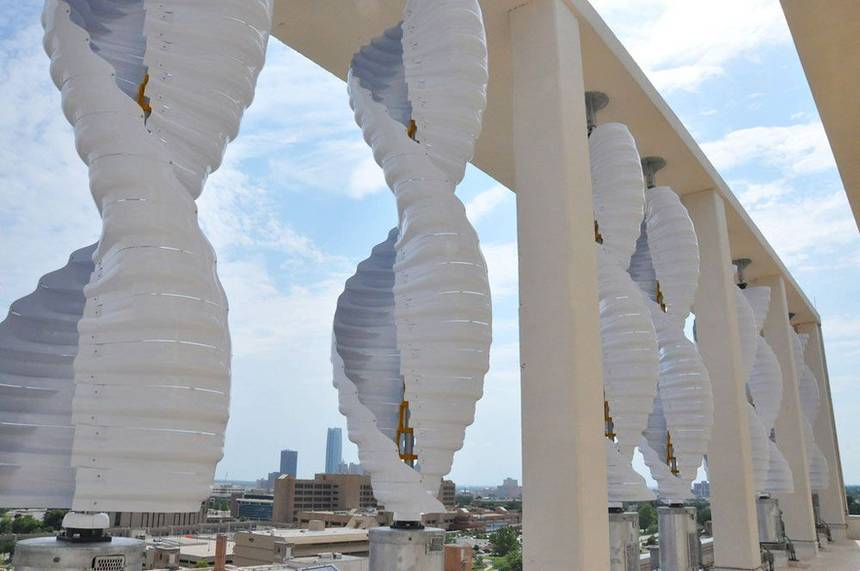

"Humans need a lot of energy, and cities need even more." That's a statement that has come to be a defining part of how cities work and their relationship with the environment. Cities require energy for everything! We need gasoline for cars and buses, electricity for computers and lighting, diesel for trucks and machinery and so on. Yet there are people who foolishly claim that somehow, we can magically switch to using only clean energy in the blink of an eye. Obviously, that's not going to happen. The International Energy Federation predicts demand for non renewable energy won't peak until somewhere between 2035 - 2050. Energy is also used extensively by various industries such as manufacturing. Production of many household commodities such as plastics also require an enormous amount of energy. There simply isn't the technology which can harness so much renewable energy and make it work as well as fossil fuels do. Still though, we will need to end our love affair with dirty energy and move to more sustainable sources. That's a major challenge facing city builders right now.

One of the best ways to reduce the carbon emissions of cities is to use cleaner oil. Currently, Canadian cities buy billions of dollars of Saudi Arabian oil every year; oil produced in an environmentally destructive manner. But why do we do that? Alberta has loads of oil waiting to be used - we just need get it out of the ground, refine it and ship it. Albertan oil is way cleaner than any other oil in the world; it's produced with rigorous environmental standards and has the lowest carbon footprint when compared to oil from any other country. We need to build more refining capacity, more pipelines and get more public support for clean, homegrown energy that supports Canadian jobs. Eventually though, we will have to usher in sustainable energy. One way to make sustainable energy work better is through the concept of "localized" energy generation, something that has gained popularity in the last few years. Localized energy generation reduces the cost to build extensive electricity transfer equipment and takes up very little space. You can put it on buildings or in public spaces and it generates electricity for the immediate vicinity. It also reduces the impact of major storms or sabotage on the energy grid. Use of bioenergy power generation has also skyrocketed in recent years because it's cheap and a good way to get rid of garbage. Carbon capture methods that are just coming onto the market now will reduce the emissions emitted from burning the garbage.
To see why Canadian oil is so clean, visit the NRCAN webpage
To see the benefits of localized energy generation, visit this How Stuff Works site.
Return to the top of the page